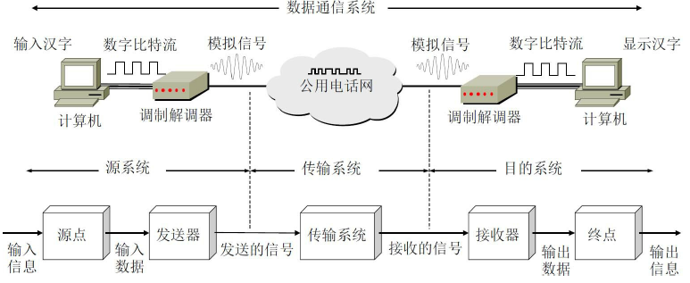
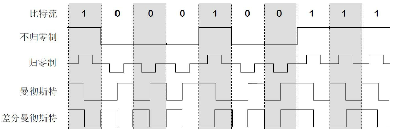
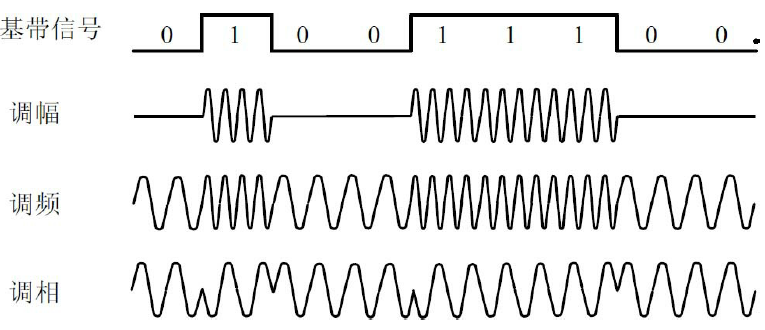
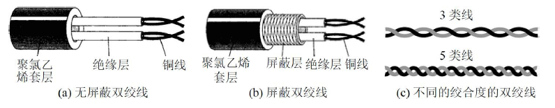
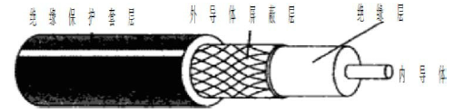
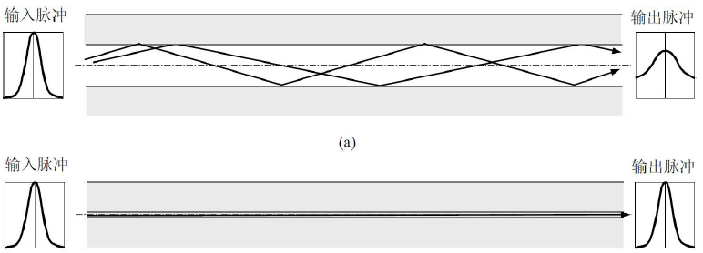
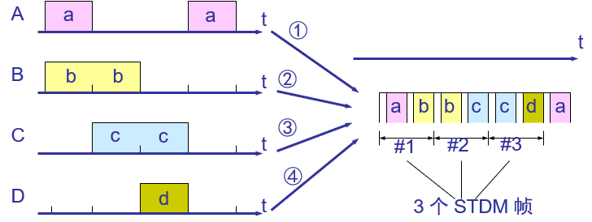
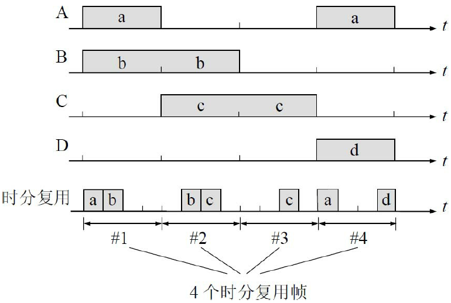
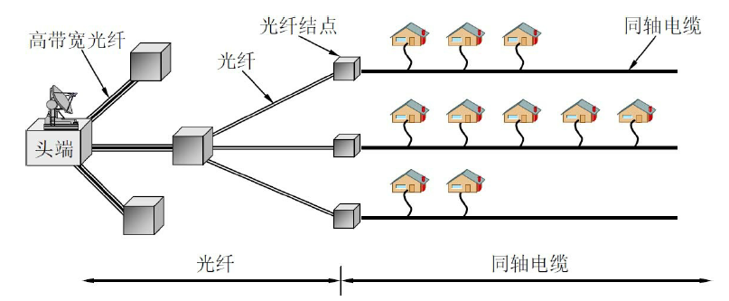

本文最后更新于：2020年7月28日 晚上
2.1 物理层的基本概念
物理层考虑的是怎样才能在连接各种计算机的传输媒体上传输数据比特流，而不是指具体的传输媒体。对上层屏蔽底层差异。
用于物理层的协议也常称为物理层规程（procedure），协议与规程的意思一般是一样的。
物理层的主要任务：确定传输媒体的接口有关的一些特性：
- 机械特性：接口接线器的形状，尺寸，引脚数，排列，固定和锁装置等
- 电气特性：接口电缆的电压范围
- 功能特性：电平电压的意义
- 过程特性：不同功能各种可能事件出现顺序
2.2 数据通信的基础知识
2.2.1 数据通信系统的模型
一般的通信系统可以分为三个部分：源系统，传输系统，目的系统，如下图所示：

2.2.2 有关信道的几个基本概念
信道一般都是用来表示向某一个方向传送信息的媒体。因此，一条通信电路往往包含一条发送信道和一条接收信道。
一般信道通信有三种方式：单向信道（单工），双向交替信道（半双工)，双向同时信道（全双工）
来自信源的信号称为基带信号（基本频带信号），如文字图像的数字信号等。往往含有较多的低频成分，甚至直流成分，很多信道无法传输低频信号与直流信号，所以需要对基带信号进行调制（modulation）。
数字信号与模拟信号中的一些概念：
位间隔（比特时间）：发送1比特信号所需要的时间或数字信号的周期
比特率：每秒的位间隔数或者每秒比特数
波特率：信号每秒变化的次数
时域与频域：略
频谱：频域图的频率集合
带宽：频谱的宽度或范围，传输信道仅仅有有限的带宽，只能传输一定的范围的频率，会产生截断（带通）
信道的容量：媒体能传输的最大比特率，取决于编码技术和信噪比
调制的分类：
- 基带调制：仅仅对基带信号的波形进行变换，把数字信号转换为另一种数字信号，变换后仍为基带信号,称为编码**（coding）**.
- 带通调制：使用载波（carrier）进行调制，把基带信号频率范围搬移到较高的频段，并转换为模拟信号，可以很好在模拟信道传输，调制后的信号称为带通信号
常用的编码如下：

- 不归零制：正电平代表1，负电平代表0
- 归零制：正脉冲代表1，负脉冲代表0
- 曼式编码：位周期中心的向上跳变代表0，位周期中心的向下跳变代表1，但也可反过来定义。
- 差分曼式编码：在每一位的中心处始终都有跳变。位开始边界有跳变代表0，而位开始边界没有跳变代表1
由上可知：曼式编码产生的信号频率比不归零制高，不归零制不能从信号本身得到时钟频率（没有自同步的功能）。
基本的带通调制：

- 调幅（AM）：载波的振幅随基带数字信号而变化
- 调频（FM）：载波的频率随基带数字信号而变化
- 调相（PM）：载波的初始相位随基带数字信号而变化
为了达到更高的信息传输速率，可以使用更复杂的振幅相位混合调制方法，如正交振幅调制（QAM Quadrature Amplitude Modulation）
2.2.3 信道的极限容量
限制码元在信道上的传输速率的因素有以下两个：
-
信道能够通过的频率范围
信道能够通过的频率范围具体的信道所能通过的频率范围总是有限的。信号中的许多高频分量往往不能通过信道。
1924年，奈魁斯特（H. Nyquist）推导出无噪声有限带宽信道的最大数据传输率公式：
**在任何信道中，码元传输的速率是有上限的，传输速率超过此上限，就会出现严重的码间串扰的问题，使接收端对码元的判决（即识别）成为不可能。**如果信道的频带越宽，也就是能够通过的信号高频分量越多，那么就可以用更高的速率传送码元而不出现码间串扰。
-
信噪比
噪声是随机产生的，它的瞬时值有时会很大，因此噪声会使接收端对码元的判决产生错误（1误判为0或0误判为1）。
信噪比就是信号的平均功率和噪声的平均功率之比，常记为S/N，并用分贝（dB）作为度量单位：
1948年，香农（C. Shannon）把奈魁斯特的工作扩大到信道受到随机（热）噪声干扰的情况。热噪声出现的大小用信噪比（信号功率与噪声功率之比）来衡量。香农的主要结论是：
香农公式的意义在于：只要信息传输速率低于信道的极限信息传输速率，就一定存在某种办法来实现无差错的传输
2.3 物理层下面的传输媒体
传输媒体可分为两大类，即导引型传输媒体和非导引型传输媒体
-
导引型传输媒体：
电磁波被导引沿着固体媒体（铜线或光纤）传播
-
非导引型传输媒体：
非导引型传输媒体就是指自由空间，在非导引型传输媒体中电磁波的传输常称为无线传输
2.3.1 导引型传输媒体
-
双绞线
几到十几公里，距离太长需要中继器，导线越粗传输距离越远。
为了提高双绞线抗电磁干扰的能力，可以在双绞线的外面再加上一层用金属丝编织成的屏蔽层。这就是屏蔽双绞线，简称为STP（Shielded Twisted Pair）。

无论是哪种类别的双绞线，衰减都随频率的升高而增大。
-
同轴线缆
同轴电缆由内导体铜质芯线（单股实心线或多股绞合线）、绝缘层、网状编织的外导体屏蔽层（也可以是单股的）以及保护塑料外层所组成

目前同轴电缆主要用在有线电视网的居民小区中。同轴电缆的带宽取决于电缆的质量。
-
光缆
光纤通信就是利用光导纤维（以下简称为光纤）传递光脉冲来进行通信。有光脉冲相当于1，而没有光脉冲相当于0。由于可见光的频率非常高，约为108MHz的量级，因此一个光纤通信系统的传输带宽远远大于目前其他各种传输媒体的带宽。

光纤不仅具有通信容量非常大的优点，而且还具有其他的一些特点：
- 传输损耗小，中继距离长，对远距离传输特别经济。
- 抗雷电和电磁干扰性能好。这在有大电流脉冲干扰的环境下尤为重要。
- 无串音干扰，保密性好，也不易被窃听或截取数据。
- 体积小，重量轻。这在现有电缆管道已拥塞不堪的情况下特别有利。
2.3.2 非导引型传输媒体
-
短波通信
短波通信（即高频通信）主要是靠电离层的反射。但电离层的不稳定所产生的衰落现象和电离层反射所产生的多径效应，使得短波信道的通信质量较差。
-
微波通信
无线电微波通信在数据通信中占有重要地位，微波在空间主要是直线传播，微波会穿透电离层而进入宇宙空间，传统的微波通信主要有两种方式，即地面微波接力通信和卫星通信。为实现远距离通信必须在一条微波通信信道的两个终端之间建立若干个中继站
微波通信的主要特点：
- 微波波段频率很高，其频段范围也很宽，因此其通信信道的容量很大
- 传输质量较高
- 与相同容量和长度的电缆载波通信比较，微波接力通信建设投资少，见效快
缺点有：
- 相邻站之间必须直视（常称为视距LOS（Line Of Si ght）），不能有障碍物
- 有时会受到恶劣气候的影响、
- 与电缆通信系统比较，微波通信的隐蔽性和保密性较差
- 中继站的使用和维护要耗费较多的人力和物力
-
卫星通信
最大特点是通信距离远，且通信费用与通信距离无关
卫星通信的频带很宽，通信容量很大，信号所受到的干扰也较小，通信比较稳定
具有较大的传播时延
2.4 信道复用技术
2.4.1 频分复用、时分复用和统计时分复用
最基本的复用就是频分复用FDM（Frequency Division Multiplexing）和时分复用TDM（Time Division Multiplexing）。
**时分复用：**时分复用的所有用户是在不同的时间占用同样的频带宽度。这两种复用方法的优点是技术比较成熟，但缺点是不够灵活，利用率低。时分复用则更有利于数字信号的传输。
统计时分复用STDM（Statistic TDM）是一种改进的时分复用，它能明显地提高信道的利用率。集中器（concentrator）常使用这种统计时分复用，此时每个信息需要注明自己的地址信息

两种时分复用的区别：
TDM：资源独占，时延可控 一般用于电话网（电路交换）
STDM：资源共享，时延不可控 一般用于INTERNET（分组交换）
**频分复用：**若每一个用户占用的带宽不变，则当复用的用户数增加时，复用后的信道的总带宽就跟着变宽

2.4.2 波分复用
波分复用WDM（Wavelength Division Multiplexing）就是光的频分复用。由于光载波的频率很高，因此习惯上用波长而不用频率来表示所使用的光载波。这样就得出了波分复用这一名词
2.4.3 码分复用
码分复用CDM（Code Division Multiplexing）,更常用的名词是码分多址CDMA（Code Division MultipleAccess）。每一个用户可以在同样的时间使用同样的频带进行通信。由于各用户使用经过特殊挑选的不同码型，因此各用户之间不会造成干扰。
码分复用最初用于军事通信，因为这种系统发送的信号有很强的抗干扰能力，其频谱类似于白噪声，不易被敌人发现。
在CDMA中，每一个比特时间再划分为m个短的间隔，称为码片（chip）。通常m的值是64或128。，为了画图简单起见，我们设m为8,使用CDMA的每一个站被指派一个唯一的m bit码片序列（chip sequence）。一个站如果要发送比特1，则发送它自己的m bit码片序列。如果要发送比特0，则发送该码片序列的二进制反码。例如，指派给S站的8bit码片序列是00011011。当S发送比特1时，它就发送序列00011011，而当S发送比特0时，就发送11100100。为了方便，我们按惯例将码片中的0写为–1，将1写为＋1。因此S站的码片序列是（–1–1–1＋1＋1–1＋1＋1）。
现假定S站要发送信息的数据率为b bit/s。由于每一个比特要转换成m个比特的码片，因此S站实际上发送的数据率提高到mb bit/s，同时S站所占用的频带宽度也提高到原来数值的m倍。这种通信方式是扩频（spread spectrum）通信中的一种。扩频通信通常有两大类。一种是直接序列扩频DSSS（Direct Sequence Spread Spectrum），如上面讲的使用码片序列就是这一类。另一种是跳频扩频
FHSS（Frequency Hopping Spread Spectrum）。
CDMA系统的一个重要特点就是这种体制给每一个站分配的码片序列不仅必须各不相同，并且还必须互相正交（orthogonal）。在实用的系统中是使用伪随机码序列。
2.5 数字传输系统
早期的数字传输系统存在着许多缺点，其中最主要的是以下两个:
- 速率标准不统一,国际范围的基于光纤的高速数据传输就很难实现
- 不是同步传输,在过去相当长的时间，为了节约经费，各国的数字网主要采用准同步方式。在准同步系统中由于各支路信号的时钟频率有一定的偏差
为了解决上述问题，美国在1988年首先推出了一个数字传输标准，叫做同步光纤网SONET（Synchronous Optical Network）。整个的同步网络的各级时钟都来自一个非常精确的主时钟
ITU-T以美国标准SONET为基础，制定出国际标准同步数字系列SDH（Synchronous Digital Hierarchy）
SDH/SONET定义了标准光信号，规定了波长为1310nm和1550nm的激光源。在物理层定义了帧结构。
现在SDH/SONET标准已成为公认的新一代理想的传输网体制，因而对世界电信网络的发展具有重大的意义。SDH标准也适合于微波和卫星传输的技术体制
2.6 宽带接入技术
2.6.1 ADSL技术
**非对称数字用户线ADSL（Asymmetric Digital Subscriber Line）**技术是用数字技术对现有的模拟电话用户线进行改造，使它能够承载宽带数字业务。
ADSL在用户线（铜线）的两端各安装一个ADSL调制解调器。这种调制解调器的实现方案有许多种。我国目前采用的方案是离散多音调DMT（Discrete Multi-Tone）调制技术。
2.6.2 光纤同轴混合网（HFC网）
**光纤同轴混合网（HFC网，HFC是Hybrid Fiber Coax的缩写）**是在目前覆盖面很广的有线电视网的基础上开发的一种居民宽带接入网，除可传送电视节目外，还能提供电话、数据和其他宽带交互型业务。
最早的有线电视网是树形拓扑结构的同轴电缆网络，它采用模拟技术的频分复用对电视节目进行单向广播传输。但以后有线电视网进行了改造，变成了现在的光纤同轴混合网（HFC网）。这种光纤同轴混合网HFC的主要特点如下:
-
HFC网把原有线电视网中的同轴电缆主干部分改换为光纤

-
要使现有的模拟电视机能够接收数字电视信号，需要把一个叫做机顶盒（settopbox）的设备连接在同轴电缆和用户的电视机之间。但为了使用户能够利用HFC网接入到互联网，以及在上行信道中传送交互数字电视所需的一些信息，我们还需要增加一个为HFC网使用的调制解调器，它又称为电缆调制解调器（cable modem）。
2.6.3 FTTx技术
略
本博客所有文章除特别声明外，均采用 CC BY-SA 4.0 协议 ，转载请注明出处！